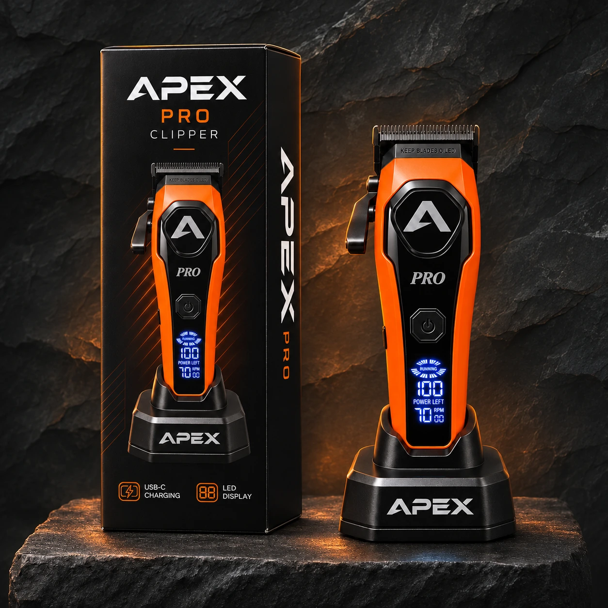

APEX PRO Clipper
For bulk removal, blending and fades.
Orange edition
APEX BARBER SUPPLIES / UK
Professional tools and supplies for the barbershop.
Based in the UK. Used by professionals.
Apex Barber Supplies is based in the UK, supplying professional tools and equipment to barbershops.
Meet APEX PRO, our clipper and trimmer range. It’s the first part of a growing collection of barbering tools and supplies.
MEET APEX PRO

For bulk removal, blending and fades.
For sharp outlines and the finishing touches.
Find the right tool for the job.
APEX PRO launches on Amazon soon.
More tools and supplies will follow.